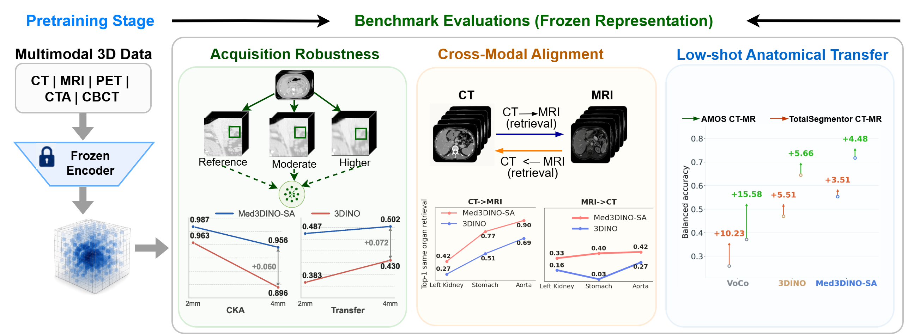
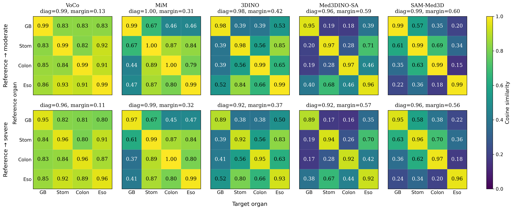

Acquisition robustness
Hold scan identity fixed and vary voxel spacing. Measure feature displacement, preservation of feature-space structure, and semantic transfer.
Cosine drift · CKA · Matched semantic transfer
NeurIPS 2026
1 Department of Computer Science, Khalifa University, Abu Dhabi, UAE
2 University of Western Australia
* Corresponding author: Naoufel Werghi
Evaluation of 3D medical foundation models is typically dominated by downstream task scores, which entangle representation quality with adaptation choices. This is especially critical in volumetric imaging, where spacing and anisotropy can substantially alter image statistics while the anatomy itself remains unchanged.
We therefore introduce REFORM-3D, a Representation-centric Evaluation FramewORk for benchmarking frozen 3D medical vision foundation Models across three questions: Acquisition Robustness, asking whether features remain stable when spacing varies while anatomy is fixed; Cross-Modal Anatomical Alignment, asking whether labeled anatomical structures remain recoverable across modalities under balanced bidirectional retrieval; and Low-Shot Anatomical Transfer, asking whether organ identity remains recoverable from limited labeled support under case-disjoint evaluation.
These are also pretraining questions, because what a 3D encoder learns depends on how volumes are geometrically presented during self-supervised pretraining. We further introduce Med3DINO encoder family, pretrained on 62.6K unlabeled MR, CT, PET, CTA, and CBCT volumes under three explicit geometric assumptions: isotropic normalization, voxel-relative sampling, and spacing-aware resampling.
Across Med3DINO and heterogeneous external encoders, REFORM-3D reveals module-specific strengths rather than a single model ordering. Within the controlled Med3DINO comparison, voxel-relative sampling yields lower embedding drift, whereas spacing-aware resampling favors anatomical transfer; semantic-transfer advantages depend on the dataset and feature type.
The encoder remains frozen across all three modules. Each protocol examines a different property, with metrics reported separately.

Hold scan identity fixed and vary voxel spacing. Measure feature displacement, preservation of feature-space structure, and semantic transfer.
Cosine drift · CKA · Matched semantic transfer
Retrieve labeled anatomical structures between CT and MR in balanced, bidirectional retrieval pools.
mAP · Top-1 · Top-5
Recover organ identity from limited labeled support while keeping support and query cases disjoint.
Centroid BA · Probe BA · Adaptation gain
Med3DINO is pretrained under three geometric policies on a quality-curated multimodal corpus. Individual modality and sequence images count as separate pretraining volumes.
PET, CTA, and CBCT extend the modality spectrum. The anatomical mapping consolidates 238 fine-grained labels into 182 organ cores across nine coarse regions.
The 64 dataset (source) collections describe the source inventory before preprocessing and validation. Corpus exposure and taxonomy are distinct from benchmark eligibility and evaluation labels. These statistics describe Med3DINO pretraining, not a dataset redistributed by the public evaluation package.
Obtain provider-controlled scans and annotations from their original sources under the applicable terms.
Resample to 1.5 × 1.5 × 1.5 mm, then use voxel-relative crops.
Retain native voxel spacing and define crops relative to voxel dimensions.
Retain native spacing, combine relative in-plane and physical through-plane sampling, and gate cross-plane rotations by anisotropy.
The corpus, initialization, architecture, objective, non-geometric augmentations, and optimization budget are held fixed. Geometry, crop definition, and rotation handling vary together: this is a complete-policy comparison.
A representative encoder panel illustrates the three evaluation axes. Choose a dataset in each table and expand the alternative CLS results.
Spacing sensitivity
Uniformly high similarity can coexist with weak organ-specific separation. Compare the same-organ diagonal with different-organ off-diagonal entries.

| Encoder | Feature | Drift ↓ | CKA ↑ | Transfer ↑ |
|---|---|---|---|---|
| External encoders · contextual comparisons | ||||
| VoCo | Multiscale GAP | 0.80 ± 0.09 | 86.70 ± 0.10 | 74.60 ± 0.15 |
| 3DINO | GAP | 3.60 ± 0.00 | 96.20 ± 0.11 | 77.80 ± 0.59 |
| SAM-Med3D | Post-neck GAP | 3.35 ± 0.04 | 86.88 ± 0.37 | 74.66 ± 0.32 |
| Hi-End-MAE | CLS | 0.94 ± 0.01 | 97.18 ± 0.17 | 72.68 ± 0.67 |
| MiM | GAP | 1.44 ± 0.01 | 99.59 ± 0.02 | 73.69 ± 0.49 |
| GL-MAE | CLS | 0.78 ± 0.00 | 99.29 ± 0.01 | 74.65 ± 0.94 |
| Med3DINO · controlled geometric policies | ||||
| Med3DINO-ISO | GAP | 4.10 ± 0.02 | 95.90 ± 0.11 | 72.50 ± 0.15 |
| Med3DINO-REL | GAP | 1.90 ± 0.03 | 96.70 ± 0.06 | 78.90 ± 0.78 |
| Med3DINO-SA | GAP | 5.40 ± 0.02 | 97.00 ± 0.02 | 79.70 ± 0.43 |
| Encoder | Feature | Drift ↓ | CKA ↑ | Transfer ↑ |
|---|---|---|---|---|
| Alternative CLS readout · 3DINO and Med3DINO | ||||
| 3DINO | CLS | 16.30 ± 0.01 | 87.50 ± 0.07 | 75.10 ± 0.18 |
| Med3DINO-ISO | CLS | 19.00 ± 0.09 | 78.50 ± 0.14 | 73.60 ± 0.78 |
| Med3DINO-REL | CLS | 10.90 ± 0.07 | 89.10 ± 0.13 | 77.20 ± 0.61 |
| Med3DINO-SA | CLS | 18.40 ± 0.06 | 85.30 ± 0.05 | 81.00 ± 0.16 |
| Encoder | Feature | Drift ↓ | CKA ↑ | Transfer ↑ |
|---|---|---|---|---|
| External encoders · contextual comparisons | ||||
| VoCo | Multiscale GAP | 0.70 ± 0.00 | 81.30 ± 0.00 | 46.10 ± 4.07 |
| 3DINO | GAP | 3.70 ± 0.00 | 91.90 ± 0.00 | 39.90 ± 2.23 |
| SAM-Med3D | Post-neck GAP | 2.83 ± 0.00 | 95.27 ± 0.00 | 52.82 ± 5.00 |
| Hi-End-MAE | CLS | 0.78 ± 0.00 | 97.44 ± 0.00 | 47.99 ± 3.40 |
| MiM | GAP | 0.75 ± 0.00 | 99.86 ± 0.00 | 48.94 ± 2.62 |
| GL-MAE | CLS | 0.50 ± 0.00 | 99.88 ± 0.00 | 48.51 ± 4.69 |
| Med3DINO · controlled geometric policies | ||||
| Med3DINO-ISO | GAP | 3.90 ± 0.00 | 91.50 ± 0.00 | 43.80 ± 2.41 |
| Med3DINO-REL | GAP | 4.40 ± 0.00 | 92.60 ± 0.00 | 41.60 ± 3.55 |
| Med3DINO-SA | GAP | 5.80 ± 0.00 | 94.30 ± 0.00 | 49.20 ± 3.32 |
| Encoder | Feature | Drift ↓ | CKA ↑ | Transfer ↑ |
|---|---|---|---|---|
| Alternative CLS readout · 3DINO and Med3DINO | ||||
| 3DINO | CLS | 15.40 ± 0.00 | 77.30 ± 0.00 | 45.50 ± 1.08 |
| Med3DINO-ISO | CLS | 20.00 ± 0.00 | 73.60 ± 0.00 | 34.80 ± 4.02 |
| Med3DINO-REL | CLS | 12.00 ± 0.00 | 86.10 ± 0.00 | 44.10 ± 2.22 |
| Med3DINO-SA | CLS | 19.20 ± 0.00 | 84.30 ± 0.00 | 57.80 ± 3.25 |
| Encoder | Feature | Drift ↓ | CKA ↑ | Transfer ↑ |
|---|---|---|---|---|
| External encoders · contextual comparisons | ||||
| VoCo | Multiscale GAP | 2.30 ± 0.00 | 42.60 ± 0.00 | 52.00 ± 0.13 |
| 3DINO | GAP | 11.30 ± 0.00 | 88.30 ± 0.00 | 53.90 ± 0.35 |
| SAM-Med3D | Post-neck GAP | 0.87 ± 0.00 | 96.13 ± 0.00 | 54.23 ± 0.49 |
| Hi-End-MAE | CLS | 1.15 ± 0.00 | 93.61 ± 0.00 | 51.87 ± 0.14 |
| MiM | GAP | 2.06 ± 0.00 | 99.20 ± 0.00 | 54.01 ± 0.38 |
| GL-MAE | CLS | 1.06 ± 0.00 | 99.35 ± 0.00 | 52.79 ± 1.02 |
| Med3DINO · controlled geometric policies | ||||
| Med3DINO-ISO | GAP | 13.20 ± 0.00 | 92.40 ± 0.00 | 54.00 ± 0.23 |
| Med3DINO-REL | GAP | 12.30 ± 0.00 | 80.90 ± 0.00 | 53.40 ± 0.43 |
| Med3DINO-SA | GAP | 9.70 ± 0.00 | 85.80 ± 0.00 | 53.70 ± 0.24 |
| Encoder | Feature | Drift ↓ | CKA ↑ | Transfer ↑ |
|---|---|---|---|---|
| Alternative CLS readout · 3DINO and Med3DINO | ||||
| 3DINO | CLS | 32.10 ± 0.00 | 83.40 ± 0.00 | 55.90 ± 0.01 |
| Med3DINO-ISO | CLS | 22.00 ± 0.00 | 93.10 ± 0.00 | 52.90 ± 0.57 |
| Med3DINO-REL | CLS | 24.20 ± 0.00 | 83.30 ± 0.00 | 54.60 ± 0.45 |
| Med3DINO-SA | CLS | 35.60 ± 0.00 | 83.80 ± 0.00 | 54.20 ± 0.37 |
| Encoder | Feature | Drift ↓ | CKA ↑ | Transfer ↑ |
|---|---|---|---|---|
| External encoders · contextual comparisons | ||||
| VoCo | Multiscale GAP | 0.10 ± 0.00 | 95.94 ± 0.00 | 71.10 ± 0.82 |
| 3DINO | GAP | 1.30 ± 0.00 | 98.90 ± 0.00 | 80.70 ± 0.23 |
| SAM-Med3D | Post-neck GAP | 0.51 ± 0.00 | 97.53 ± 0.00 | 72.61 ± 1.40 |
| Hi-End-MAE | CLS | 0.23 ± 0.00 | 99.18 ± 0.00 | 70.28 ± 1.85 |
| MiM | GAP | 0.01 ± 0.00 | 99.94 ± 0.00 | 56.35 ± 1.53 |
| GL-MAE | CLS | 0.04 ± 0.00 | 99.95 ± 0.00 | 58.70 ± 0.32 |
| Med3DINO · controlled geometric policies | ||||
| Med3DINO-ISO | GAP | 2.00 ± 0.00 | 97.90 ± 0.00 | 78.00 ± 0.87 |
| Med3DINO-REL | GAP | 1.80 ± 0.00 | 97.40 ± 0.00 | 81.70 ± 1.05 |
| Med3DINO-SA | GAP | 1.70 ± 0.00 | 99.20 ± 0.00 | 83.50 ± 0.57 |
| Encoder | Feature | Drift ↓ | CKA ↑ | Transfer ↑ |
|---|---|---|---|---|
| Alternative CLS readout · 3DINO and Med3DINO | ||||
| 3DINO | CLS | 6.00 ± 0.00 | 92.40 ± 0.00 | 74.60 ± 0.73 |
| Med3DINO-ISO | CLS | 7.00 ± 0.00 | 92.40 ± 0.00 | 59.30 ± 0.34 |
| Med3DINO-REL | CLS | 5.60 ± 0.00 | 93.50 ± 0.00 | 77.00 ± 0.91 |
| Med3DINO-SA | CLS | 5.70 ± 0.00 | 94.20 ± 0.00 | 80.60 ± 1.18 |
Selected results from the controlled same-scan acquisition table. All three metrics are scaled by 100; lower drift and higher CKA / transfer are preferred. Mean ± SD over three evaluation seeds for fixed checkpoints.
This is a geometric spacing stress test. It does not simulate the full variability of clinical scanner physics.
CT–MR retrieval
Retrieval strengths depend on the encoder and dataset. Within the controlled Med3DINO triplet, SA has the highest reported mean mAP on these three datasets with both GAP and CLS. The selected external rows provide additional context.
| Encoder | Feature | mAP ↑ | Top-1 ↑ | Top-5 ↑ |
|---|---|---|---|---|
| External encoders · contextual comparisons | ||||
| VoCo | Multiscale GAP | 11.40 ± 0.12 | 18.90 ± 1.79 | 49.90 ± 2.28 |
| 3DINO | GAP | 20.10 ± 0.16 | 36.90 ± 1.59 | 64.50 ± 1.77 |
| SAM-Med3D | Post-neck GAP | 13.61 ± 0.09 | 21.01 ± 0.21 | 51.59 ± 0.59 |
| Hi-End-MAE | CLS | 11.03 ± 0.07 | 20.71 ± 0.70 | 49.96 ± 2.19 |
| MiM | GAP | 9.00 ± 0.05 | 9.56 ± 1.00 | 31.49 ± 2.44 |
| GL-MAE | CLS | 9.34 ± 0.04 | 9.69 ± 0.12 | 29.76 ± 0.97 |
| Med3DINO · controlled geometric policies | ||||
| Med3DINO-ISO | GAP | 16.20 ± 0.11 | 26.80 ± 0.50 | 54.60 ± 1.33 |
| Med3DINO-REL | GAP | 21.00 ± 0.17 | 38.50 ± 1.07 | 65.80 ± 0.59 |
| Med3DINO-SA | GAP | 27.20 ± 0.24 | 57.00 ± 0.68 | 78.10 ± 0.42 |
| Encoder | Feature | mAP ↑ | Top-1 ↑ | Top-5 ↑ |
|---|---|---|---|---|
| Alternative CLS readout · 3DINO and Med3DINO | ||||
| 3DINO | CLS | 17.60 ± 0.06 | 32.20 ± 0.51 | 60.60 ± 0.61 |
| Med3DINO-ISO | CLS | 14.60 ± 0.13 | 23.20 ± 1.02 | 54.00 ± 1.35 |
| Med3DINO-REL | CLS | 18.10 ± 0.06 | 33.80 ± 0.77 | 64.80 ± 0.24 |
| Med3DINO-SA | CLS | 19.90 ± 0.06 | 41.10 ± 0.20 | 72.20 ± 0.23 |
| Encoder | Feature | mAP ↑ | Top-1 ↑ | Top-5 ↑ |
|---|---|---|---|---|
| External encoders · contextual comparisons | ||||
| VoCo | Multiscale GAP | 19.30 ± 0.00 | 13.20 ± 0.00 | 25.40 ± 0.00 |
| 3DINO | GAP | 30.20 ± 0.00 | 35.70 ± 0.00 | 76.40 ± 0.00 |
| SAM-Med3D | Post-neck GAP | 18.30 ± 0.00 | 15.36 ± 0.00 | 36.43 ± 0.00 |
| Hi-End-MAE | CLS | 19.10 ± 0.00 | 12.50 ± 0.00 | 42.86 ± 0.00 |
| MiM | GAP | 18.26 ± 0.00 | 15.36 ± 0.00 | 42.50 ± 0.00 |
| GL-MAE | CLS | 17.40 ± 0.00 | 13.93 ± 0.00 | 44.29 ± 0.00 |
| Med3DINO · controlled geometric policies | ||||
| Med3DINO-ISO | GAP | 25.90 ± 0.00 | 26.10 ± 0.00 | 56.10 ± 0.00 |
| Med3DINO-REL | GAP | 39.20 ± 0.00 | 43.20 ± 0.00 | 72.50 ± 0.00 |
| Med3DINO-SA | GAP | 41.90 ± 0.00 | 48.60 ± 0.00 | 83.20 ± 0.00 |
| Encoder | Feature | mAP ↑ | Top-1 ↑ | Top-5 ↑ |
|---|---|---|---|---|
| Alternative CLS readout · 3DINO and Med3DINO | ||||
| 3DINO | CLS | 29.40 ± 0.00 | 40.70 ± 0.00 | 77.10 ± 0.00 |
| Med3DINO-ISO | CLS | 28.10 ± 0.00 | 31.40 ± 0.00 | 60.00 ± 0.00 |
| Med3DINO-REL | CLS | 25.40 ± 0.00 | 32.10 ± 0.00 | 69.60 ± 0.00 |
| Med3DINO-SA | CLS | 31.10 ± 0.00 | 43.90 ± 0.00 | 82.90 ± 0.00 |
| Encoder | Feature | mAP ↑ | Top-1 ↑ | Top-5 ↑ |
|---|---|---|---|---|
| External encoders · contextual comparisons | ||||
| VoCo | Multiscale GAP | 16.30 ± 0.11 | 25.70 ± 0.42 | 50.30 ± 0.70 |
| 3DINO | GAP | 28.00 ± 0.11 | 44.60 ± 0.40 | 77.60 ± 0.46 |
| SAM-Med3D | Post-neck GAP | 15.32 ± 0.13 | 24.48 ± 0.53 | 45.75 ± 0.92 |
| Hi-End-MAE | CLS | 13.28 ± 0.05 | 15.78 ± 0.27 | 42.64 ± 1.02 |
| MiM | GAP | 9.58 ± 0.04 | 11.37 ± 0.46 | 28.32 ± 0.58 |
| GL-MAE | CLS | 9.76 ± 0.01 | 8.13 ± 0.27 | 25.61 ± 0.82 |
| Med3DINO · controlled geometric policies | ||||
| Med3DINO-ISO | GAP | 21.60 ± 0.04 | 27.80 ± 0.13 | 59.60 ± 0.42 |
| Med3DINO-REL | GAP | 31.80 ± 0.04 | 54.00 ± 0.70 | 78.00 ± 0.37 |
| Med3DINO-SA | GAP | 44.80 ± 0.09 | 74.80 ± 0.66 | 91.20 ± 0.05 |
| Encoder | Feature | mAP ↑ | Top-1 ↑ | Top-5 ↑ |
|---|---|---|---|---|
| Alternative CLS readout · 3DINO and Med3DINO | ||||
| 3DINO | CLS | 21.10 ± 0.09 | 27.40 ± 1.21 | 57.10 ± 0.59 |
| Med3DINO-ISO | CLS | 20.00 ± 0.12 | 32.70 ± 0.22 | 61.20 ± 0.53 |
| Med3DINO-REL | CLS | 23.50 ± 0.10 | 38.00 ± 0.66 | 69.60 ± 0.16 |
| Med3DINO-SA | CLS | 28.30 ± 0.14 | 56.70 ± 0.73 | 84.30 ± 0.24 |
Selected rows from the cross-modal alignment table. Scores are on a 0–100 scale; higher is better. Results average both balanced retrieval directions and report mean ± SD over three evaluation seeds for fixed checkpoints.
Crops retain surrounding context. These scores measure organ recoverability in that setting, rather than establishing context-independent anatomical alignment. External encoders differ in pretraining, architecture, and feature interface; geometric-policy attribution is restricted to ISO/REL/SA.
Low-shot transfer
Low-shot performance separates centroid organization from recoverability after fitting a readout. Within Med3DINO, SA has the highest reported mean probe BA on these datasets with both feature readouts; external encoders show different starting points and adaptation gains.
| Encoder | Feature | Centroid BA ↑ | Probe BA ↑ | Adaptation gain |
|---|---|---|---|---|
| External encoders · contextual comparisons | ||||
| VoCo | Multiscale GAP | 25.80 ± 0.60 | 36.10 ± 0.97 | 10.20 ± 0.72 |
| 3DINO | GAP | 47.00 ± 4.79 | 52.50 ± 3.20 | 5.50 ± 2.30 |
| SAM-Med3D | Post-neck GAP | 34.56 ± 3.99 | 36.54 ± 1.81 | 1.98 ± 2.18 |
| Hi-End-MAE | CLS | 31.80 ± 1.28 | 44.39 ± 1.76 | 12.60 ± 3.01 |
| MiM | GAP | 14.83 ± 2.92 | 19.15 ± 0.78 | 4.32 ± 2.94 |
| GL-MAE | CLS | 14.35 ± 1.09 | 18.34 ± 2.88 | 3.98 ± 2.55 |
| Med3DINO · controlled geometric policies | ||||
| Med3DINO-ISO | GAP | 37.50 ± 2.09 | 44.30 ± 4.17 | 6.80 ± 2.14 |
| Med3DINO-REL | GAP | 52.30 ± 1.81 | 54.80 ± 1.97 | 2.50 ± 1.33 |
| Med3DINO-SA | GAP | 55.30 ± 1.57 | 58.80 ± 1.75 | 3.50 ± 0.76 |
| Encoder | Feature | Centroid BA ↑ | Probe BA ↑ | Adaptation gain |
|---|---|---|---|---|
| Alternative CLS readout · 3DINO and Med3DINO | ||||
| 3DINO | CLS | 47.20 ± 2.24 | 47.70 ± 2.19 | 0.50 ± 0.75 |
| Med3DINO-ISO | CLS | 43.10 ± 2.66 | 43.10 ± 1.80 | 0.00 ± 0.95 |
| Med3DINO-REL | CLS | 45.80 ± 3.04 | 46.10 ± 3.09 | 0.30 ± 0.10 |
| Med3DINO-SA | CLS | 48.20 ± 4.80 | 48.60 ± 3.39 | 0.40 ± 2.31 |
| Encoder | Feature | Centroid BA ↑ | Probe BA ↑ | Adaptation gain |
|---|---|---|---|---|
| External encoders · contextual comparisons | ||||
| VoCo | Multiscale GAP | 29.20 ± 3.03 | 47.60 ± 7.34 | 18.40 ± 8.78 |
| 3DINO | GAP | 65.90 ± 5.51 | 74.30 ± 4.24 | 8.50 ± 2.33 |
| SAM-Med3D | Post-neck GAP | 34.79 ± 1.88 | 55.29 ± 8.41 | 20.50 ± 9.22 |
| Hi-End-MAE | CLS | 44.05 ± 10.80 | 61.11 ± 17.66 | 17.06 ± 7.15 |
| MiM | GAP | 23.81 ± 3.83 | 46.16 ± 12.41 | 22.35 ± 8.73 |
| GL-MAE | CLS | 33.33 ± 14.59 | 42.33 ± 12.02 | 8.99 ± 4.42 |
| Med3DINO · controlled geometric policies | ||||
| Med3DINO-ISO | GAP | 54.20 ± 6.35 | 67.10 ± 4.96 | 12.80 ± 3.99 |
| Med3DINO-REL | GAP | 75.10 ± 1.00 | 79.00 ± 3.08 | 3.80 ± 2.58 |
| Med3DINO-SA | GAP | 74.50 ± 2.33 | 80.00 ± 0.83 | 5.60 ± 1.60 |
| Encoder | Feature | Centroid BA ↑ | Probe BA ↑ | Adaptation gain |
|---|---|---|---|---|
| Alternative CLS readout · 3DINO and Med3DINO | ||||
| 3DINO | CLS | 57.40 ± 2.10 | 61.60 ± 0.40 | 4.20 ± 1.82 |
| Med3DINO-ISO | CLS | 43.10 ± 8.36 | 53.30 ± 7.20 | 10.20 ± 2.00 |
| Med3DINO-REL | CLS | 50.40 ± 6.97 | 58.10 ± 5.57 | 7.70 ± 1.39 |
| Med3DINO-SA | CLS | 57.30 ± 5.50 | 62.80 ± 4.80 | 5.50 ± 1.28 |
| Encoder | Feature | Centroid BA ↑ | Probe BA ↑ | Adaptation gain |
|---|---|---|---|---|
| External encoders · contextual comparisons | ||||
| VoCo | Multiscale GAP | 37.10 ± 1.01 | 52.70 ± 0.84 | 15.60 ± 1.78 |
| 3DINO | GAP | 64.40 ± 1.96 | 70.10 ± 0.36 | 5.70 ± 1.65 |
| SAM-Med3D | Post-neck GAP | 35.68 ± 0.27 | 43.90 ± 3.92 | 8.22 ± 4.15 |
| Hi-End-MAE | CLS | 40.74 ± 2.84 | 57.98 ± 1.66 | 17.25 ± 4.43 |
| MiM | GAP | 15.67 ± 0.62 | 33.26 ± 5.22 | 17.59 ± 5.36 |
| GL-MAE | CLS | 16.57 ± 2.31 | 24.50 ± 3.82 | 7.93 ± 1.77 |
| Med3DINO · controlled geometric policies | ||||
| Med3DINO-ISO | GAP | 55.90 ± 2.78 | 61.50 ± 5.44 | 5.60 ± 3.46 |
| Med3DINO-REL | GAP | 67.40 ± 2.14 | 71.10 ± 3.38 | 3.70 ± 1.66 |
| Med3DINO-SA | GAP | 71.70 ± 3.12 | 76.20 ± 2.39 | 4.50 ± 0.91 |
| Encoder | Feature | Centroid BA ↑ | Probe BA ↑ | Adaptation gain |
|---|---|---|---|---|
| Alternative CLS readout · 3DINO and Med3DINO | ||||
| 3DINO | CLS | 57.60 ± 2.66 | 60.40 ± 1.64 | 2.80 ± 1.33 |
| Med3DINO-ISO | CLS | 51.70 ± 0.95 | 55.10 ± 1.17 | 3.40 ± 1.40 |
| Med3DINO-REL | CLS | 58.20 ± 3.65 | 63.00 ± 3.42 | 4.80 ± 0.25 |
| Med3DINO-SA | CLS | 60.80 ± 3.32 | 64.90 ± 2.81 | 4.10 ± 1.72 |
Selected results from the low-shot transfer table. Balanced accuracy is on a 0–100 scale; adaptation gain is the reported change from centroid to probe accuracy. Two labeled support samples per organ and modality; case-disjoint queries; mean ± SD over three evaluation seeds for fixed checkpoints. A gain is not a standalone ranking criterion.
Only the readout adapts; the encoder stays frozen. A larger gain can arise from a weaker centroid baseline.
Separate measurements of geometric sensitivity, CT–MR organ recoverability, and low-shot anatomical transfer can support an encoder shortlist for a specified task.
The findings do not establish general invariance or guarantee downstream performance. Geometric-policy conclusions are established within the studied Med3DINO architecture and self-supervised recipe.
The standalone public release provides the three evaluation modules with KiTS23 and MMWHS examples.
| Dataset | Module | Metrics |
|---|---|---|
| KiTS23 | Controlled spacing sensitivity | Embedding drift, CKA, matched semantic transfer |
| MMWHS | CT–MR retrieval | mAP, Top-1, Top-5 |
| MMWHS | Low-shot organ recognition | Centroid and probe balanced accuracy, adaptation gain |
Use Python 3.11 on Linux and a PyTorch build compatible with your CUDA installation.
git clone https://github.com/Endarzboy/REFORM3D.git
cd REFORM3D
python3.11 -m venv .venv
source .venv/bin/activate
python -m pip install -c requirements.txt .Obtain data and encoder weights separately, then edit their paths in the YAML. This example runs MMWHS.
reform3d check --config configs/mmwhs-demo.yaml
reform3d run --config configs/mmwhs-demo.yamlUse configs/kits23-demo.yaml for controlled spacing evaluation. A completed run writes an HTML report, score CSV, and run metadata.
Use the following BibTeX entry to cite REFORM-3D (or Med3DINO).
@inproceedings{assefa_reform3d,
title = {REFORM-3D: A Representation-Centric Evaluation Framework for 3D Medical Vision Foundation Models},
author = {Assefa, Maregu and Naseer, Muzammal and Velayudhan, Divya and Kumie, Gedamu Alemu and Werghi, Naoufel},
booktitle = {Advances in Neural Information Processing Systems (NeurIPS)},
year = {2026},
pages ={1--10},
url = {https://endarzboy.github.io/reform3d-website/}
}Acknowledgments
This research was funded by the Center for Autonomous Robotic Systems (CARS), Khalifa University of Science and Technology (KU-CARS).